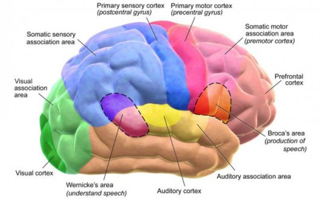

The daily Naya Diganta

Woody Allen sues Amazon for contract breach
BNP Chairperson Khaleda Zia has been in jail for a year and the party is “facing the most difficult time in its history” in her absence. The party has failed to reorganise following its defeat in the December 30 general polls. Its leaders and activists have been demoralised and there are no fresh protests to boost their morale. To add to their woes, many senior leaders have become inactive after the election fearing harassment, said party sources.
South Asian women breastfeed longer in the world: Unicef
Babies in South Asia are more likely to be breastfed than any other region in the world and are breastfed for longer, Unicef said in a new analysis released on Sunday. In Bangladesh, only 51 per cent of new-born with early initiation breastfeeding within an hour after birth and 55 per cent of infants less than 6 months old are exclusively breastfed. Breast milk saves lives and protects babies against deadly diseases, it said. Children should be breastfed for two years and beyond because it provides an important source of nutrients for healthy growth and can prevent half of deaths during a child’s second year of life. Furthermore, it leads to higher performance on intelligence tests among children and adolescents (3 IQ points on average).
Situation like Venezuela may take place in Bangladesh: Menon
Against the backdrop of a woman alleging that she was not allowed to appear for the National Eligibility Test (NET) in Goa after she refused to take off her 'hijab', a state government official has clarified that there are no rules specifying dress code for the exam, reports dnaindia.
Menopausal hormone therapy linked to higher brain skills
Hormone therapy taken to relieve menopausal symptoms including hot flashes, fatigue, insomnia, may also play a beneficial role in improving memory and thinking skills, a study suggests, reports IANS. Hormone therapy refers to either oestrogen or combination oestrogen or progesterone treatment. The study led by researchers from the Mayo Clinic in Minnesota, US, showed that women who took oestradiol-an oestrogen steroid hormone-via skin patches maintained brain volume in the dorsolateral prefrontal cortex-an area of the brain that assists with memory, thinking, planning and reasoning, for over the seven years of the study.

New findings may improve chemotherapy in cancer treatment
China has passed a new law that seeks to "Sinicize" Islam within the next five years, the latest move by Beijing to rewrite how the religion is practiced, reports Aljazeera.

Modi assures India’s cooperation in resolving Rohingya crisis
Indian prime minister Narendra Modi on Thursday assured New Delhi’s cooperation in resolving the longstanding Rohingya crisis in Bangladesh. His assurance came when visiting Bangladesh foreign minister AK Abdul Momen sought India’s support for early repatriation of Rohingya people to Myanmar’s Rakhine state as he met the Indian prime minister in New Delhi in the morning. As Momen thanked prime minister Modi for India’s humanitarian assistance to Rohingyas, the PM said that India was always with Bangladesh and would remain beside it, a press release issued by Bangladesh mission in India said. During the meeting, the Indian prime minister mentioned that the partnership between Bangladesh and India was flourishing under the visionary leadership of prime minister Sheikh Hasina. He reaffirmed India’s sincere commitment to Bangladesh’s prosperity and development and viewed that Bangladesh-India relations was a model between the two neighbouring countries which needed to be showcased for wider audience around the world. The foreign minister expressed his satisfaction on the excellent bilateral relations that exist between the two countries which had grown and prospered, especially with the statesmanship of prime minister Sheikh Hasina and prime minister Modi. He stressed that Bangladesh would continue her resolve in further strengthening and deepening her relations with India in the coming days.
Editor: Alamgir Mohiuddin
Publisher:Shamsul Huda, FCA
1 R. K. Mission Road, Dhaka-1203.
Phone:02-57165261-9
© All rights reserved | dailynayadiganta.com 2019